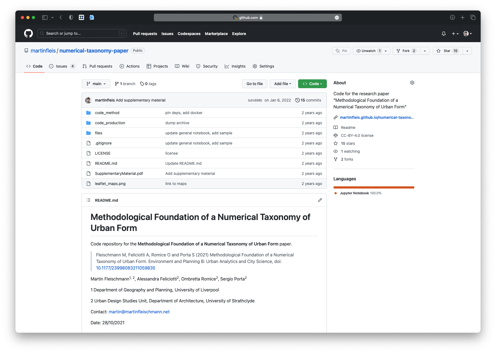
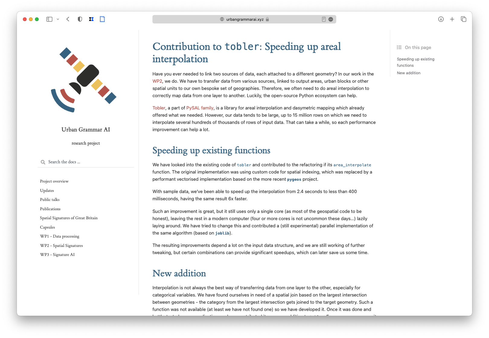
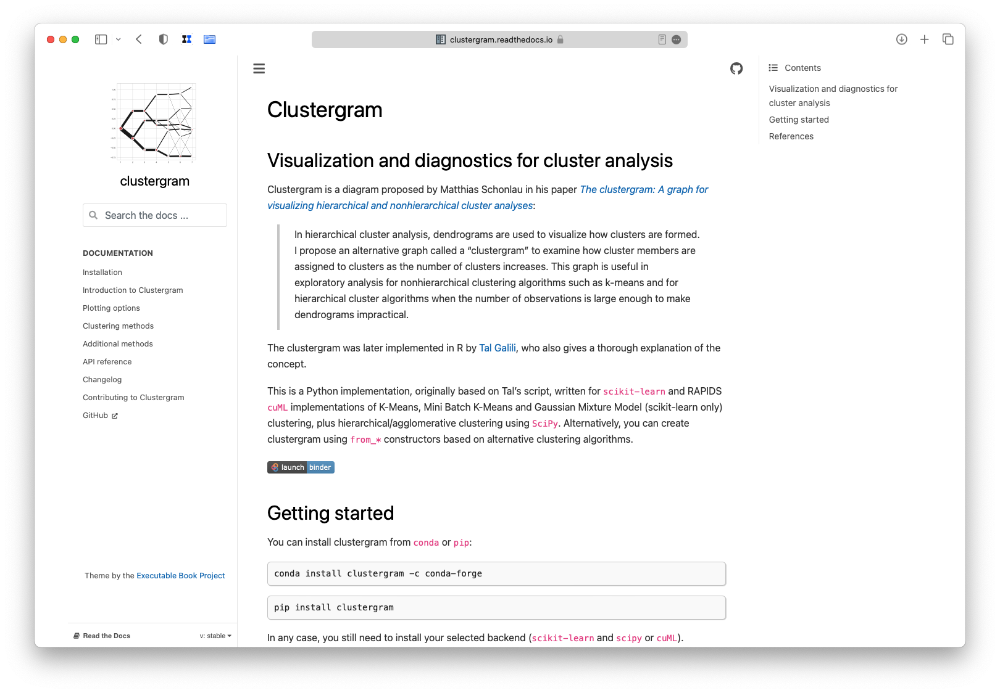

Spatial data in the open
Charles University
2011


Let’s go to Erasmus
UCL Bartlett School of Planning
heh, no way
Let’s go to Erasmus
UCL Bartlett School of Planning
University of Strathclyde
where?
Let’s go to Erasmus
UCL Bartlett School of Planning
University of Strathclyde, Glasgow, Scotland
Strathclyde became a plan B
Let’s do Masters abroad
MEXT scholarship (Japan)
heh, no way
Strathclyde became a plan B
2016
QGIS is your friend


Though analytics is still marginal


yet, there were some hints of the future


2017
Enrolled in a PhD programme
The Urban Atlas
How am I going to do this???
I got 0 skills I need.


momepy was born that day

a tool I needed myself
shared in the open

I made some mistakes
I fixed them over the years
none of the code written for 0.1 would run today
What does it do?
Morphological tessellation

Idea and Concept
QGIS Modeller
Python code
2018
“Hey, this does not work.”
“I want to do this.”
“This is how you do that.”
2019
Hi Martin,
I have a question for you: would you like to become a “core developer” of GeoPandas?
are you insane?
Research stuff



2020
University of Liverpool


We had to scale up the analysis but tools were not ready. So, we improved the tools.

And created some new.


PySAL
Python Spatial Analysis Library
hi martin,
this morning at our dev meeting you were nominated to be a pysal core dev
i am happy to invite you to join the team

2022
???
back in Prague
out of academia
Peek into startup world
heh, no way
Charles University
2025
Urban Taxonomy
What is urban morphometrics
Not anything new!
What is urban morphometrics
A study of urban form through the means of quantitative assessment of its constituent elements.
Morphometrics in 2025
availability of data
evolution of software
performance
automatised pre-processing
all that pushes the limits of scalability
scalable urban morphometrics
Idea of a morphotope

How to capture it


Flexible definition of built-up fabric

Geography and urban structure

Our approach to open science


Open Urban Data Science
Special Issue in Computers, Environment and Urban Systems
Software papers
Deadline: 31 May 2026
open access?
The takeaway
Be active in what you enjoy
Release early, release often
Make open a feature, not a bug
Do what is best, not what system wants
Share your knowledge, it is a way to achieve immortality
(Dalai Lama)